このページは古い版です。最新は v8（名前を「Colne投資チャンネル」に直した12案）
バナー v6：v5 の Q02・Q04・Q09・Q10 を、Colne が伝わる構成に改良
構成（4案共通）
- 左：Colne の立ち絵（人柄。こはるん入り）
- 1段目：個人投資家チャンネル（いちばん大きく）
- 2段目：元資産運用会社・投資歴8年の Colne がお届け（名前だけ字を大きく・色を変える）
- 3段目：日本株・米国株・為替・暗号資産 ＋ 平日 18:00 更新（Q09 は東京18:00＝NY 4:00 の時計）
Dラボのナレッジから使ったこと
- 第一印象はほぼ最初の2秒で決まる → 上から「何のチャンネルか → 誰か → 何を・いつ」の3段だけにし、2秒で読める量にした
- 評価は際立った1つの特徴で決まる（ハロー効果） → 際立たせるのは「Colne」の名前だけにした（字を大きく・色を変える）
- 専門性は黒と深緑、権威は赤 → 電光掲示板の案（R04）の地を黒と深緑にした
- プレゼンは内容よりも人柄で決まる → 立ち絵を左の先頭に置き、目に入る順を「人 → 文字」にした
- 自分のことを大げさに言うと逆効果になる（Impression mismanagement, 2017） → 経歴は事実だけを書いた
出典：Dラボ「やりたい仕事に就いて稼いで自由を勝ち取るための面接の心理学」・「見た目としぐさで人を操るプレゼンの心理学」・「【ショート】気付かぬうちに嫌われてる人の話し方TOP5」
注意：スマホでは、分野の札の字はとても小さくなる（約7px）。国旗の絵で分かる形にした。スマホで読めるのは1段目と2段目まで。
R02_neon ネオン
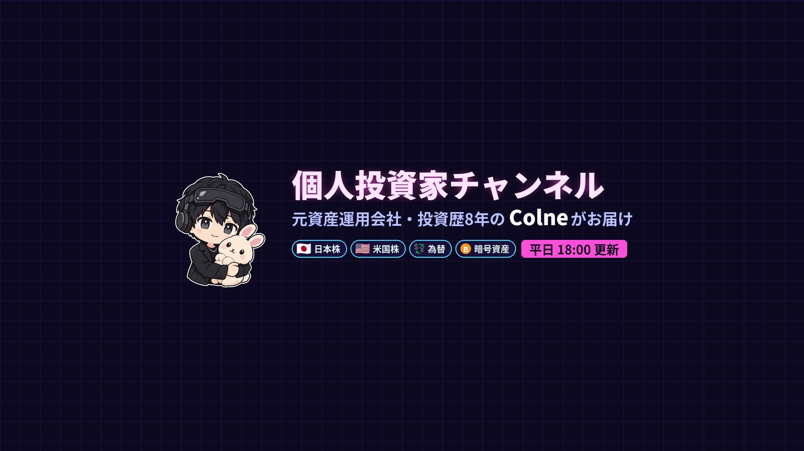
見える範囲（赤枠）
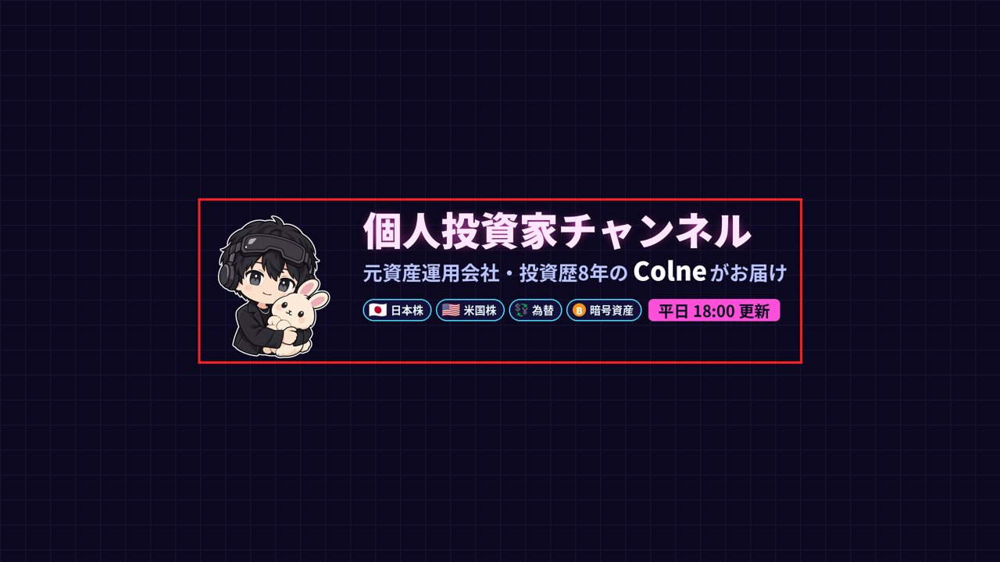
スマホでの見え方（幅390）
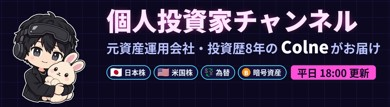
R04_board 電光掲示板
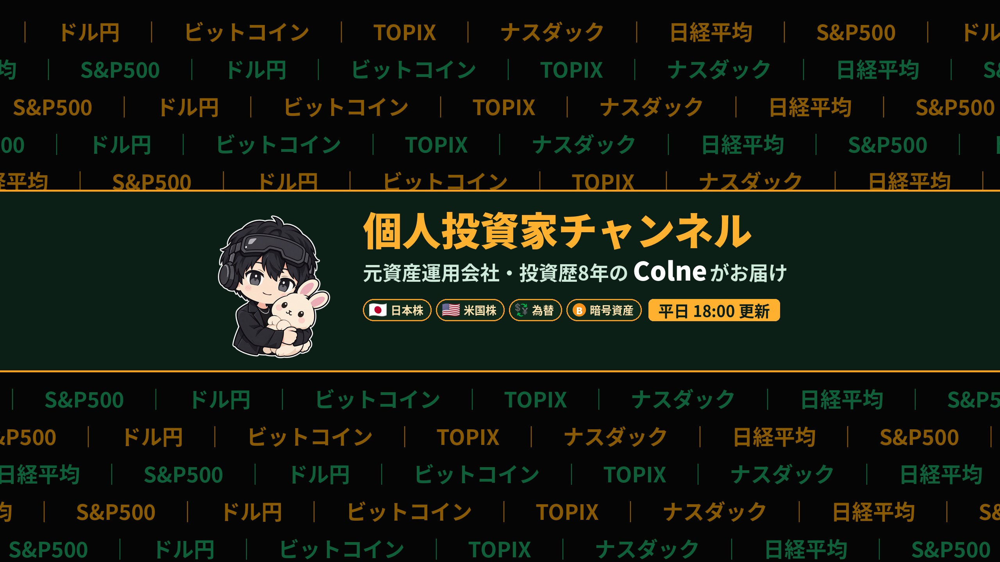
見える範囲（赤枠）
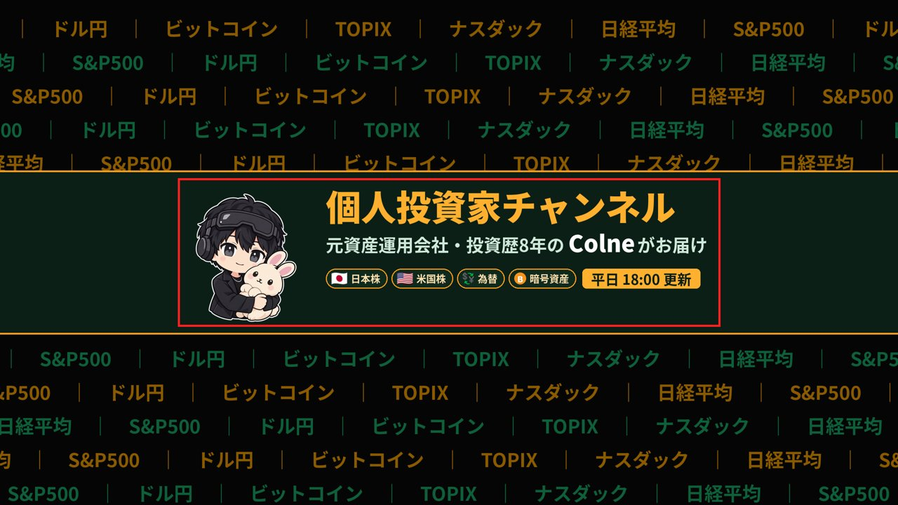
スマホでの見え方（幅390）
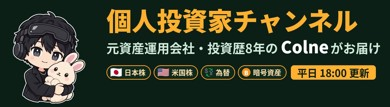
R09_clock 東京とニューヨークの時計
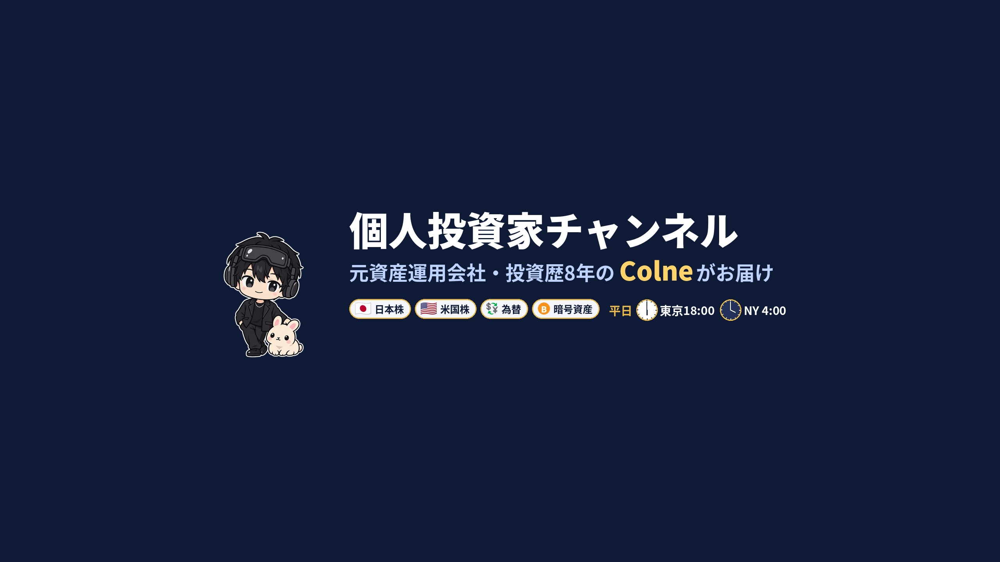
見える範囲（赤枠）
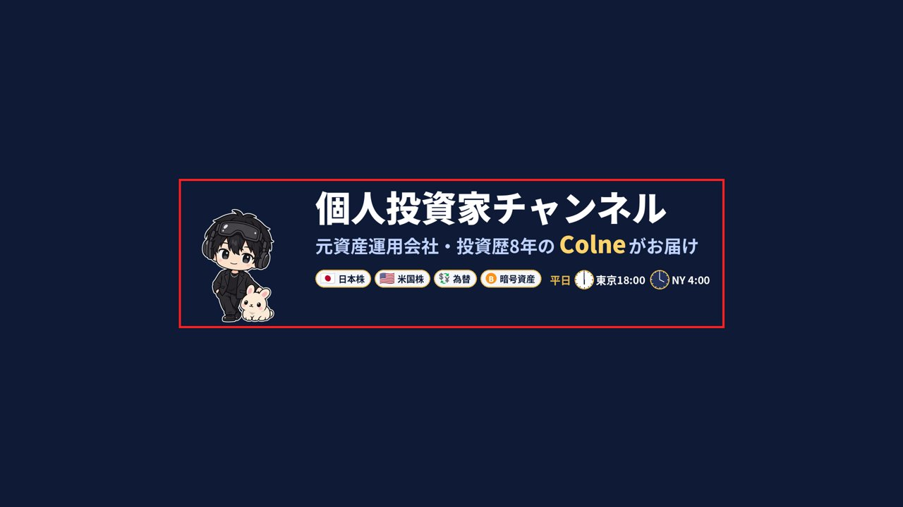
スマホでの見え方（幅390）
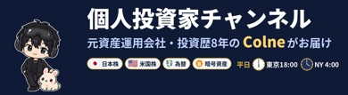
R10_glass ガラスのカード
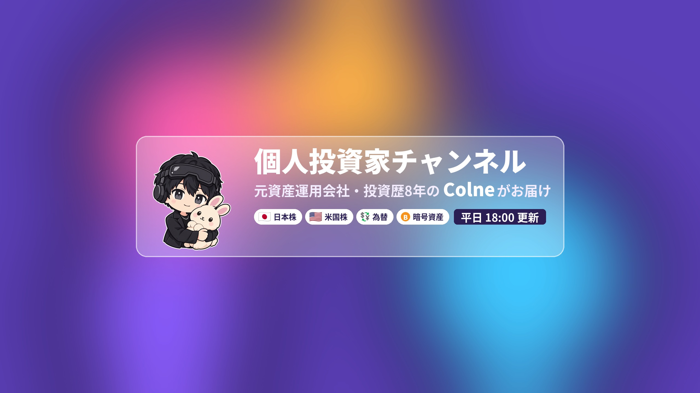
見える範囲（赤枠）
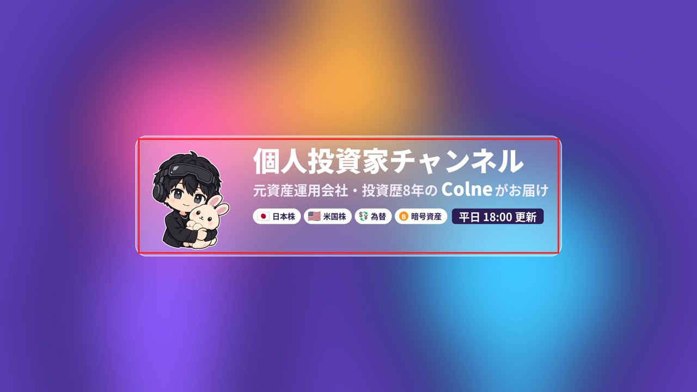
スマホでの見え方（幅390）
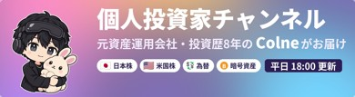